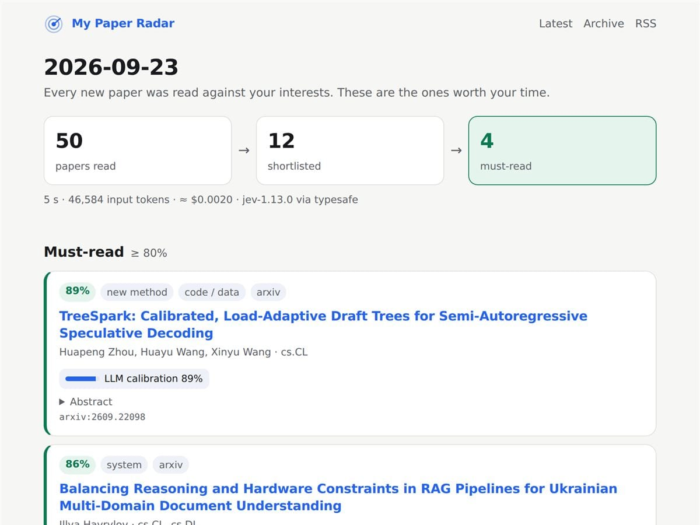

- $0.06每天讀完整個 arXiv（約 1,500 篇）
- 96.9%4 份未看過的 Cochrane 回顧召回率
- 78%文獻篩選工作量減少
- 7每個工作日自動運行的公開雷達
問題
arXiv 每月收到超過 30,000 篇論文（2026 年 6 月為 32,040 篇），每個工作日約 1,500 篇，已經沒有人讀得完整份清單。現有做法各有盲點：
- 關鍵字通知會漏掉用詞不同的論文。
- Embedding 推薦會悄悄濾掉不像你過去閱讀的內容。
- 用聊天型 LLM 每天跑過全部論文又慢又貴，所以多數工具只處理預先篩過的一小部分。
核心想法：判斷，而不是摘要
大多數 AI 工具讀完論文後寫一段摘要給你。Paper Radar 不寫任何東西：它對每個研究興趣問模型一個是非題，拿回一個校準過的機率，例如「提出了 agent 評測基準：0.97」，再由程式決定這代表什麼。
判斷比生成一句話便宜得多，也沒有需要解析的自由文字。成本低到可以讀完全部 1,500 篇，而不是預先篩過的少數，而那正是關鍵字通知和推薦系統弄丟你真正想讀那篇論文的地方。
架構
關鍵設計決策
原子化問題，在程式中組合
每個興趣是一個獨立的是非題。相關度預設取 max(權重 × 機率)，也可改用 noisy-OR，讓同時符合多個興趣的論文排得更前面。
一次請求問完所有問題
同一篇論文的所有問題放進同一次呼叫，興趣變多只增加 token，幾乎不增加延遲。
先檢索，再判斷
模型只看標題、摘要與分類。作者與機構和主題無關，所以刻意不提供，避免影響判斷。
級聯控制成本
由判斷模型篩選數千篇；生成式模型（可選）只為最後入選的 10 篇各寫一句摘要。
門檻可以自己驗證
calibrate 指令用你自己的標註算出 Brier score、ECE 與精確率／召回率表，再回推最適合的門檻，不必只相信廠商數字。
回饋只要一鍵
每篇論文附 👍／👎 連結，點下去會開一個預填好的 GitHub Issue；下一次執行自動收進 labels.jsonl 並關閉 issue。
延伸：系統性回顧篩選模式
文獻回顧的「標題與摘要篩選」形狀和每日雷達一樣，邏輯卻相反：所有納入條件都要成立，任何一個排除條件就淘汰。所以篩選模式用納入條件的幾何平均計分、保留每一筆被篩過的紀錄，並直接輸出 PRISMA 2020 需要的計數，以及領域常用的 WSS（work saved over sampling）。
一個反直覺的發現
把複合條件拆成更多條，反而讓某個主題的工作量節省從 10.0% 掉到 0.1%。篩選是「且」的關係，多一條條件就多一次否決的機會，所以應該寫最少、最能從摘要判斷的條件。
成果與驗證
用 CLEF eHealth 2019 的 Cochrane 回顧資料驗證，比對的是審查者在「標題與摘要階段」的真實決定，篩選條件直接引用各回顧公開的選錄標準。下面 4 份在開發與修正期間完全沒有看過：
| 保留測試的回顧 | 紀錄數 | 應納入 | 召回率 | 節省工作量 | 成本 |
|---|---|---|---|---|---|
| 降血壓藥：RAS 抑制劑 vs 其他類別 | 12,319 | 88 | 95.5% | 68.1% | $0.37 |
| 血栓預防措施的落實 | 3,574 | 11 | 100% | 95.1% | $0.11 |
| 青光眼睫狀體破壞手術 | 2,456 | 12 | 100% | 95.8% | $0.08 |
| COPD 患者憂鬱症的心理治療 | 1,098 | 16 | 100% | 92.5% | $0.03 |
| 合計 | 19,447 | 127 | 96.9% | 78.0% | $0.60 |
開發期間用過的 8 份回顧表現差很多（合併只有 38–48%）。效能主要取決於回顧本身而不是工具：保留組是大型、低盛行率（0.3–1.5% 應納入）的搜尋，接近真實情境。三輪預先登記的預測，包含猜錯的，都公開在 repo 裡。
日常使用的實測：50 篇新論文 5 秒判讀完成，花費 $0.002（每篇約 932 個 input tokens）；501 篇 33 秒，花費 $0.02。
誠實的限制
- 只讀摘要，不讀全文。
- 不是人工篩選者的替代品：適合當第二篩選者，或決定人工閱讀的順序。
- Jev 是 2026 年 9 月才推出的新模型，基準數字由廠商提供，所以要固定模型版本並自行校準。